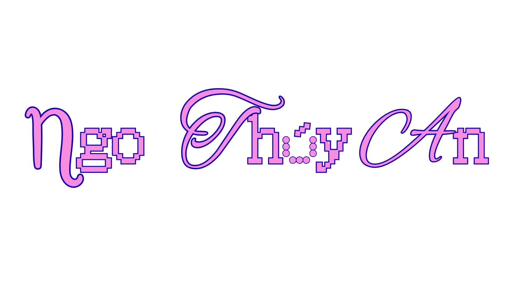

映像作品 ／ 夢の記録

motion / film / graphic / ui diary — 2023—2601 / motion
![[THAY HÌNH CÁ Ở ĐÂY]](Myportfolio/assets/works/fish1.png)
02 / film
![[THAY HÌNH CÁ Ở ĐÂY]](Myportfolio/assets/works/fish2.png)
03 / graphic
![[THAY HÌNH CÁ Ở ĐÂY]](Myportfolio/assets/works/fish3.png)
04 / interfaces
About
![[THAY HÌNH NV Ở ĐÂY]](Myportfolio/assets/works/legs.png)

motion / film / graphic / ui diary — 2023—26![[THAY HÌNH PROFILE Ở ĐÂY]](Myportfolio/assets/works/DSC03316.JPG)
Motion Designer · RMIT Student
Hi, mình là An — mình xây thế giới từ những giấc mơ, những vòng lặp ký ức, và những thứ trông gần như bình thường cho tới khi không còn bình thường nữa. Mình làm việc giữa animation 2D, phim thử nghiệm và thiết kế tư biện (speculative design), thường xoay quanh nỗi hoài niệm, cảm giác "uncanny", và những cảm xúc quá tải trong yên lặng.
Based in Vietnam.
![[THAY HÌNH NV Ở ĐÂY]](Myportfolio/assets/works/face.png)